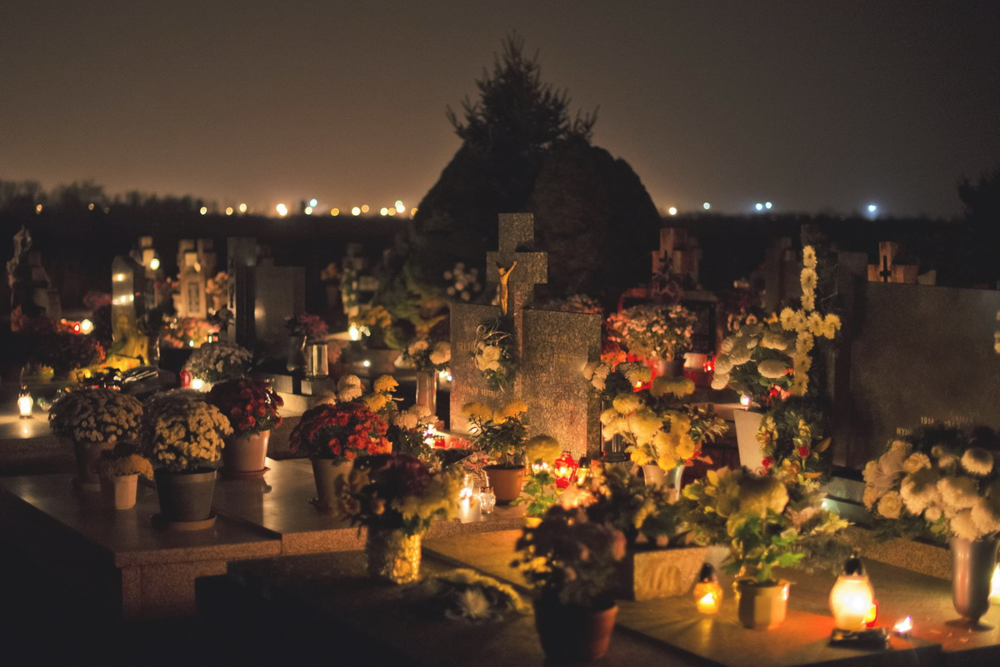

Minta mereka menunjukkan catatan asli dari gereja mereka; minta mereka membentangkan gulungan daftar nama uskup mereka, yang mengalir dalam suksesi sejak awal dengan cara sedemikian sehingga uskup [pertama mereka] harus dapat menunjukkan yang menahbiskannya dan pendahulunya setidaknya salah seorang rasul atau penerus apostolik.

Uskup Agung Luksemburg
Keuskupan Agung Luksemburg adalah sebuah keuskupan agung Ritus Latin Gereja Katolik di Keharyapatihan Luxembourg, yang meliputi seluruh Keharyapatihan tersebut. Keuskupan tersebut didirikan pada 1870, dan menjadi keuskupan agung pada 1988.

Uskup Agung Vaduz
Keuskupan Agung Vaduz meliputi wilayah seluruh negara Kepangeranan Liechtenstein.
Paus Roma
Paus sejatinya adalah Uskup Roma, yang menjadi pemimpin Gereja Katolik di seluruh dunia. Menurut Gereja Katolik, keutamaan Uskup Roma tersebut terutama berasal dari peranannya sebagai "penerus Santo Petrus", yang disebut sebagai "Uskup Roma pertama".

Patriarkat Aleksandria
Warisan evangelisasi Santo Markus di Afrika.
Bonus: Santo & Santa
Dalam kepercayaan Kristen, seorang Santo (Santa untuk wanita), juga dikenal sebagai orang kudus, adalah seseorang yang diakui memiliki tingkat kesucian yang luar biasa, kemiripan, atau kedekatan dengan Tuhan.
Bonus: Santo & Santa
Dalam kepercayaan Kristen, seorang Santo (Santa untuk wanita), juga dikenal sebagai orang kudus, adalah seseorang yang diakui memiliki tingkat kesucian yang luar biasa, kemiripan, atau kedekatan dengan Tuhan.